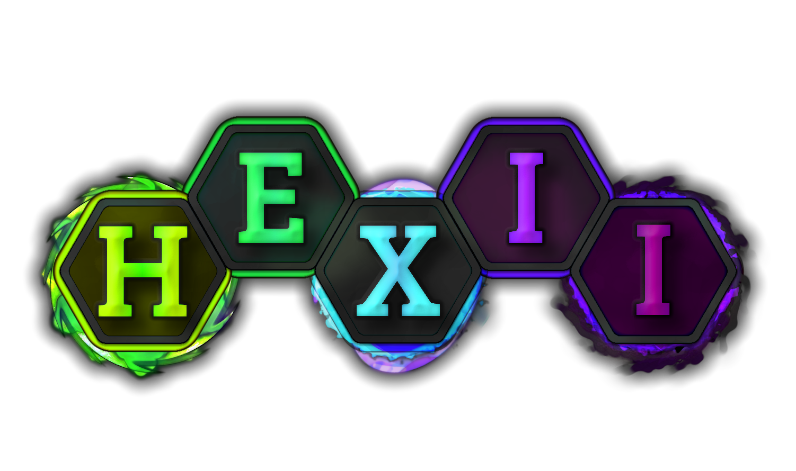

Sam Shakeshaft
Game Developer
Please note: This page is currently under heavy construction until 5th January 2025
# Projects
About
DNGN is game dev society's first collaborative project. During its first year, our fledgling society attracted around 10 members who regularly contributed to the design of DNGN. The scope of this design was quite small in that we came up with the name, genre, basic gameplay loop and other such details but then proceeded to really refine the vision for that gameplay loop. By the time we were ready to start development proper, we were all on the same page that the game would be a co-op dungeon crawler with a heavy focus on weapons being intrinsically tied to movement and especially the interaction between two weapons leading to a novel experience.
Notes
Time-wise, my contributions amount to around 30% of the total man hours, with the majority of that being spent writing gameplay and systems code. A not-at-all insignificant portion of time was also dedicated to architecting the game with the 2 other co-leads. For example, one day we began a joint coding session by spending a few hours, whiteboard at the ready, deciding how to go about enabling enemies to use weapons exactly like players would. This led to the idea to make a "virtual joystick" which an item would respond to and having the player register their real joystick to the virtual one while an enemy would move the virtual joystick with their AI. (I then proceeded to implement the Item code while my teammate was implementing the Enemy code). A huge focus was placed on making the game modular enough that making new items should be something we could potentially train someone to do without them needing to know the ins and outs of the rest of the codebase. I'm pretty happy that the item system meets that requirement, as adding a new item with unique behaviour can be done very quickly and barring specific balance adjustments, it works out of the box with both players and enemies.
We're really happy with how the gameplay turned out as we feel there is a surprising amount of depth in the movement system even with the few items that are in the game at present. Please have a play if you have time, otherwise I put together a trailer for the game which gets across the main points.
I could talk about DNGN for hours (the technical side is a lot of fun to explain!), however I don't want this to turn into a focusless wall of text so feel free to ask me anything you want
Hexii
About
Hexii is a cross-platform incremental game developed in C++ with the Cocos2dx framework, and it's bit of a 'forever project' for me it seems. I plan to release it eventually (2025 is the goal!) but as it will be my first proper game release, I want it to be much larger in scope than, for instance, a game-jam game. As such, Hexii needs more time in the oven.
Design
Incremental games, characterised by their "number go up" gameplay, are genuinely one of my favourite genres out there and I think they are overlooked (or perhaps just misunderstood) by the wider gaming audience due to their position as 'casual' options (not derogatory). Hexii is absolutely designed with a casual audience in mind, but I believe the magic of incremental games is their ability to appeal to the hardcore gamer mindset as well. Designing an incremental is fundamentally asking the question "how can I keep my players maximally engaged with as little as possible". Finding new and interesting ways to make a number go up is a joyful task! Unfortunately, it's also very difficult to get right... Mostly it comes down to the maths of how costs in the game increase vs resource yields. The simpler the formula and interactions are, the easier it is to design for, but the less interesting it ends up for the player at the other end because things tend to become too stale too quickly. Carefully adding in progression "walls" and solutions that remove them or otherwise introduce new aspects of gameplay is difficult to get right (and usually requires tester feedback), but when done well leads to a highly fun game.
Code
Everything you see in hexii was made by me, from the assets to the code (except the framework). Cocos2dx makes cross-platform compilation (relatively) straightforward, and it also handles the low level rendering code. For the most part though, that's it. Hexii's internals can be broken up into roughly three groups:
- The hexii [game pieces]
- UI
- Broader systems [saving/loading, user progression handling etc]
There are inumerable talking points for all three of these, but the overall picture is that the main scene (scene is a cocos2dx term but means what you would expect) sets up the UI and hexii systems, triggers the loading system to restore save data, then mostly hands control over to the hexii 'plane' which manages interactions between hexii. The UI and hexii systems each interact via message passing and UI is arranged hierarchically with components and sub components which generally pass messages no more than one layer up/down at a time.
About
My 2024 Cambridge University Game Jam submission, developed with one partner; I did all of the programming and he made all of the assets. The theme of this 48 hour jam was "Reflection", which Blind as a Bat interprets to be the reflection of echolocation bouncing off of cave walls. We managed 2nd place in the popular vote out of over 20 games :D
Notes
Designing BaaB was really fun because of how integrated the visuals were with the game's design. It was critical we got the look and feel of echolocation right, otherwise we just wouldn't have a game... It took effectively the whole first day to find what worked, as I was iterating over multiple failed ideas (initially I thought using sprite masks to make things visible/invisible would work but I couldn't get it to look good). Although it strikes me as obvious in hindsight, the solution we ultimately went with was to use unity's lighting and particle systems, adapted slightly. Namely, with a generous usage of shaders to trick the player into thinking our game is prettier than it is :)